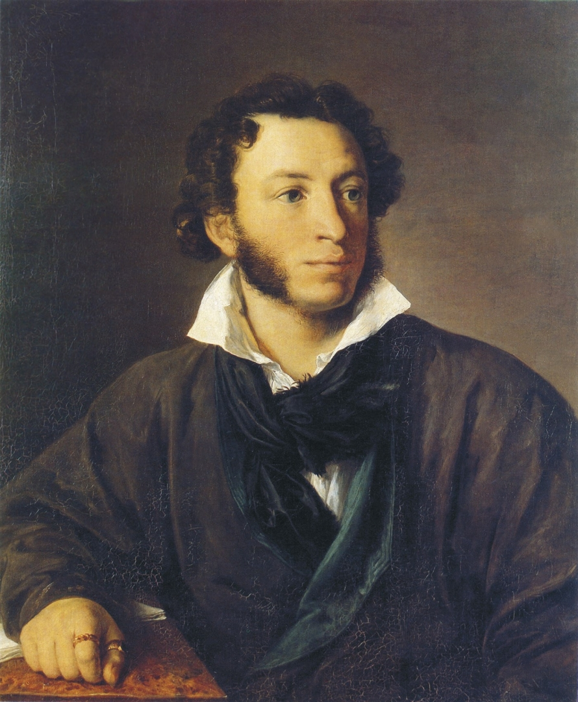

К Чаадаеву
- Любви, надежды, тихой славы
- Недолго нежил нас обман,
- Исчезли юные забавы,
- Как сон, как утренний туман;
- Но в нас горит еще желанье,
- Под гнетом власти роковой
- Нетерпеливою душой
- Отчизны внемлем призыванье.
- Мы ждем с томленьем упованья
- Минуты вольности святой,
- Как ждет любовник молодой
- Минуты верного свиданья.
- Пока свободою горим,
- Пока сердца для чести живы,
- Мой друг, отчизне посвятим
- Души прекрасные порывы!
- Товарищ, верь: взойдет она,
- Звезда пленительного счастья,
- Россия вспрянет ото сна,
- И на обломках самовластья
- Напишут наши имена!
А.С.Пушкин